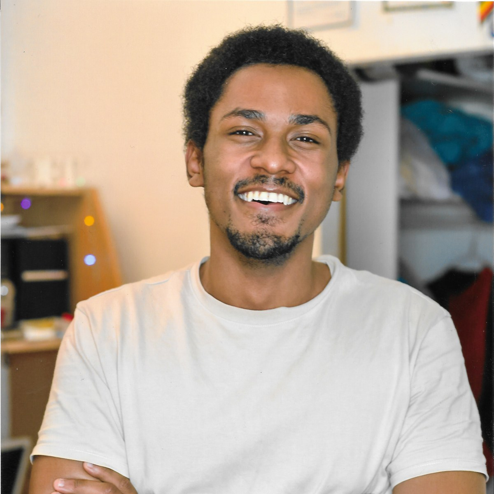

Je suis Allan,
développeur full stack
passionné
par le hardware et le software

Moi
Diplômé du Bachelor Universitaire de Technologie (BUT) informatique à l'IUT de Villetaneuse (Université Sorbonne Paris-Nord). Passionné par la programmation, je cherche à comprendre le fonctionnement des technologies qui nous entourent.
Télécharger CVSavoir-faire
- Expression des besoins du client à la conception
- De la programmation à la validation (tests)
- Jusqu'à la maintenance et l'évolution des applications
Faits marquants
- 5 marketplaces intégrées en production (eBay, Temu, Amazon, Cdiscount) — stage METM
- Sécurité applicative durcie — CSP (Content Security Policy, jetons à usage unique générés à chaque requête), HSTS (HTTP Strict Transport Security) — projet Horizon
- Observabilité Dockerisée — Grafana, Loki, Promtail — stage METM
- 3 projets en équipe de 5 — clean code, design patterns (Factory, Builder, Façade, Repository)
Expérience
METM
Stage Développeur Python / Intégrations Marketplaces
Mars 2026 - Juillet 2026
Au sein de cette entreprise spécialisée dans la gestion d'opérations e-commerce multi-marketplaces, j'ai développé en Python des intégrations aux API eBay, Temu, Amazon et Cdiscount, ainsi que des dashboards permettant de visualiser les informations des différentes marketplaces tout en comuniquant avec mes collègues pour atteindre nos objectifs. J'ai automatisé plusieurs processus métier, notamment la génération et l'envoi des factures, le marketing digital et assuré la maintenance applicative des outils internes.
J'ai mis en place un système de monitoring et standardisé les logs à l'aide de conteneurs Docker (Grafana, Loki, Promtail). Après une phase de prototypage rapide, j'ai refactorisé plusieurs composants en modules, notamment les clients de communication avec les API en appliquant les principes du clean code et des design patterns (Factory, Builder, Façade, Repository). J'ai aussi mis en place des suites de tests de régression et unitaires et est mis en place des base de données.
Association Jean-Luc François
Stage Développeur Web
Février 2025 - Mars 2025
Durant ce stage, j'ai contribué à la création, la maintenance et l'amélioration des sites web d'une association, en développant de nouvelles fonctionnalités comme un système d'inscription aux newsletters utilisant HTML, CSS, JS et en optimisant les performances (cache, temps de chargement).
J'ai également conçu des visuels pour les réseaux sociaux et amélioré l'expérience utilisateur (responsive design, formulaire de contact). Un projet important a été la refonte du site pour promouvoir les services payants. Cette expérience a renforcé mes compétences en développement web et en gestion de projet.
PERFORM VISION
Stage Développeur full stack junior
Février 2024 - Mars 2024
J'ai été chargé de moderniser la gestion des bons de livraison de l'entreprise en développant un site extranet dynamique, ce qui m'a permis de renforcer mes compétences en conception d'applications web, notamment avec l'utilisation de framework MVC et de la méthode Agile.
Ce projet a également impliqué l'utilisation de technologies telles que PHP, JavaScript, CSS, et la gestion des données via SQL, avec la création de diagrammes tels que MLD et EA pour modéliser les bases de données.
Formation
IUT de Villetaneuse, Université Sorbonne Paris Nord
BUT, Informatique (validation, conception)
Juin 2026
Lycée Joseph Gaillard
Baccalauréat, Mathématiques et Sciences de l'Ingénieur
juin 2022
Projets
Voici quelques-uns de mes projets récents.
N'hésitez pas à les découvrir.


Chaque cellule est déduite des centres des cercles circonscrits obtenus par triangulation de Delaunay.
QVoronoÏ
Projet académique SAE, en équipe de 5 (Allan ABATUCI, Enrike CHAMPION, Ruben DUBORD, Yassine ESSAFA, Yanis NAÏT-MAKHLOUF) — 3 phases, 63 commits.
Défi
Construire, à partir d'un simple CSV de points du plan, un diagramme de Voronoï correct et vérifiable, puis l'exporter en SVG.
Approche
Le diagramme est reconstruit via une triangulation de Delaunay : chaque cellule de Voronoï est déduite des centres des cercles circonscrits aux triangles obtenus. L'ensemble est couvert par une suite de tests Pytest et accompagné d'une documentation technique HTML.
Résultat
Une application Python qui importe un jeu de points, calcule et affiche le diagramme, puis l'exporte en SVG — testée et documentée.
- Python
- Delaunay
- Pytest
Filtrage par tags et recommandation calculés entièrement sur l'appareil, sans backend.
Vapeur
Projet académique SAE S5.01, même équipe de 5 — 151 commits.
Défi
Recommander des jeux vidéo par affinité de tags, sans compte utilisateur et sans dépendre d'un serveur distant.
Approche
Application mobile React Native avec stockage local (SQLite, AsyncStorage) : tout le filtrage et la recommandation s'exécutent sur l'appareil. Testée en conditions réelles via Expo Go (QR code).
Résultat
Une appli de recommandation fonctionnelle et 100% locale, sans backend ni authentification à gérer.
- React Native
- SQLite
- AsyncStorage
Horizon
Projet personnel solo, pour approfondir React et Laravel — actuellement en v1.1.0.
Défi
Concevoir un outil de gestion de projet complet (Kanban, calendrier, Gantt, dépendances entre tâches), déployé sur mon homelab, avec une architecture propre, sans dupliquer la logique entre un front et une API séparée.
Approche
Laravel 12 + Inertia.js + React 19 : les données transitent directement du contrôleur à la vue React, sans API REST intermédiaire, et toute l'autorisation passe par des Policies Laravel. Recherche plein texte via SQLite FTS5, détection de cycles de dépendances par parcours de graphe (BFS) écrit à la main, pièces jointes multiples (10 max, 2 Mo chacune) en stockage privé, visibilité par membre au niveau du projet, recherche globale (Cmd/Ctrl+K), rappels d'échéance planifiés.
Durcissement sécurité : CSP à nonces, HSTS, X-Frame-Options, redirection HTTPS automatique derrière reverse proxy. Déploiement Docker multi-stage (build Node → PHP-FPM/nginx sur Alpine).
Déploiement automatisé sur mon homelab : un workflow GitHub Actions lance les tests et des audits composer/npm à chaque push, puis un second workflow s'exécute sur un runner auto-hébergé pour reconstruire et relancer les conteneurs (docker compose up --build --wait), vérifier la santé de l'app (/up) et notifier le résultat sur Discord.
Résultat
Une v1.1.0 fonctionnelle, avec compte et jeu de données de démonstration, entièrement en français — en ligne sur horizon.allanab.com.
- Laravel 12
- Inertia.js
- React 19
- Docker
Serveur maison
Projet personnel, pour héberger mes propres services sans dépendre du cloud.
Défi
Exposer un service web sur internet sans ouvrir de port sur mon routeur : un port ouvert directement expose le réseau domestique aux scans automatisés (effet honeypot) et demande une surveillance constante du trafic.
Approche
Un vieux portable Dell (4 Go de RAM) reconverti sous Linux Server fait office d'hôte. Le trafic passe par un tunnel Cloudflare plutôt que par une redirection de port : les requêtes transitent d'abord par les serveurs de Cloudflare avant d'atteindre la partie exposée du réseau, ce qui évite d'avoir à surveiller le trafic en continu. L'application (Horizon) tourne dans un conteneur Docker, à la fois pour une couche de sécurité supplémentaire et pour simplifier le déploiement.
Le déploiement est automatisé via GitHub Actions : un workflow lance les tests, puis un second s'exécute sur un runner auto-hébergé pour reconstruire les conteneurs et vérifier que l'app répond avant de considérer le déploiement réussi. Le monitoring est assuré par Grafana, avec des alertes envoyées directement sur Discord via webhook.
Résultat
Une infrastructure personnelle qui héberge Horizon en continu, mise à jour automatiquement, surveillée sans intervention manuelle, sans coût d'hébergement cloud et sans exposer directement le réseau domestique.
- Docker
- Cloudflare Tunnel
- GitHub Actions
- Grafana
Get In Touch
J'adorerais recevoir de vos nouvelles. Que vous ayez une question ou que vous souhaitiez simplement discuter de design, de technologie, n'hésitez pas à m'envoyer un message.